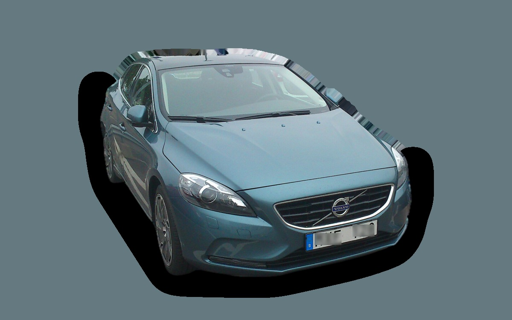
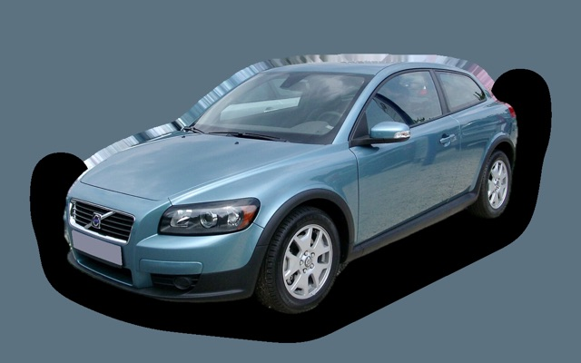
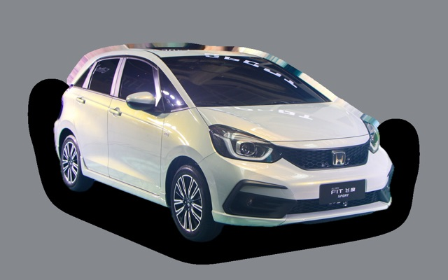
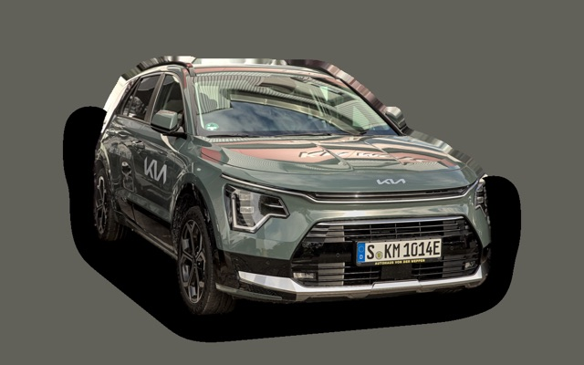
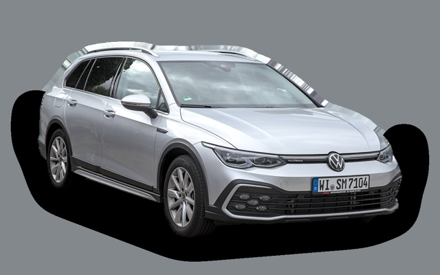

What does a Volvo V40 cost per month?
A 2016 Volvo V40 costs about SEK 3,230 a month, all in.
SEK 3,230per month, 2016 model
SEK 109,000price, 2016 model
SEK 236,000last new price
Cvalue grade (2016)


Monthly cost by model year
| Model year | Version in the calculation | Price | Per month | Grade |
|---|---|---|---|---|
| 2019 | T3 152 automat, Kinetic | SEK 143,000 | SEK 3,328 | C |
| 2016 | T3 152 automat, Kinetic | SEK 109,000 | SEK 3,230 | C |
| 2013 | T3 152 automat, Kinetic | SEK 84,000 | SEK 3,105 | C |
Based on 5 years of ownership and 12,500 km a year, with fuel prices from 2026-10-22. The monthly cost includes depreciation, fuel, servicing and repairs, insurance and road tax.
How the cost splits for a 2016 car
- Depreciation: SEK 634/mo
- Fuel: SEK 1,483/mo
- Servicing and repairs: SEK 802/mo
- Insurance: SEK 233/mo
- Road tax: SEK 77/mo
Used prices in ads
| Model year | Median price | Ads | Typical mileage |
|---|---|---|---|
| 2019 | SEK 184,900 | 19 | 131,000 km |
| 2018 | SEK 165,900 | 55 | 111,000 km |
| 2017 | SEK 132,400 | 53 | 139,000 km |
| 2016 | SEK 119,400 | 84 | 160,000 km |
| 2015 | SEK 99,700 | 84 | 182,000 km |
| 2014 | SEK 89,900 | 67 | 200,000 km |
| 2013 | SEK 79,900 | 59 | 215,000 km |
| 2012 | SEK 89,900 | 7 | 215,000 km |
The median price in Swedish ads by model year in October 2026 (source: Blocket). Ad prices are asking prices, and the final price may be lower.
Engines and versions
| Engine | Fuel | Power | 0–100 km/h | Consumption (WLTP) | Range | Model years | Extra cost |
|---|---|---|---|---|---|---|---|
| T3 152 automat | Petrol | 152 hp | 8.4 s | 5.9 l/100 km | – | 2012–2019 | – |
| D2 120 | Diesel | 120 hp | 10.5 s | 4 l/100 km | – | 2012–2019 | +SEK 3,600 |
- Trim: Kinetic, R-Design (+SEK 33,600)
Facts
- Body
- Hatchback
- Model years
- 2012–2019
- Last new price
- SEK 236,000
- Boot
- 335 litres
- Euro NCAP
- 5 of 5 stars
- New-car warranty
- 3 years
- Reliability
- 4 of 5
- Comprehensive insurance, estimate
- SEK 5,000/yr
- Servicing, estimate
- SEK 3,900/yr
Common faults to watch for
- Timing belt failure (1.6 diesel), repair about SEK 35,000
- Particulate filter and EGR (diesel), repair about SEK 9,000
- Oil consumption and timing chain tensioner (Drive-E petrol), repair about SEK 16,000
The faults apply to some engines and model years. The calculator works out the risk for the exact version you choose.
Pros and cons
Pro
Cheap used Volvo with strong safety.
Con
Small boot, and no longer made.
Similar cars
- Suzuki SwiftSEK 3,129/mo as a 2026 model

Volvo C30SEK 3,103/mo as a 2010 model
Honda JazzSEK 3,083/mo as a 2023 model
Kia NiroSEK 3,063/mo as a 2023 model- Peugeot 208SEK 3,044/mo as a 2023 model

Volkswagen GolfSEK 3,420/mo as a 2023 model
Updated 2026-10-27 · ad data Oct 2026